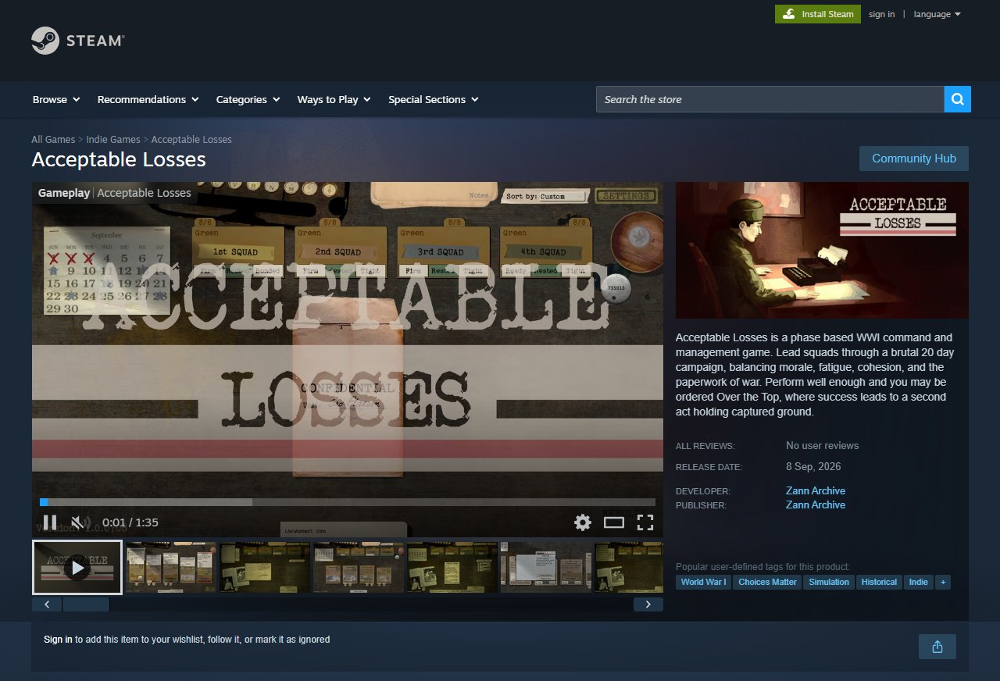
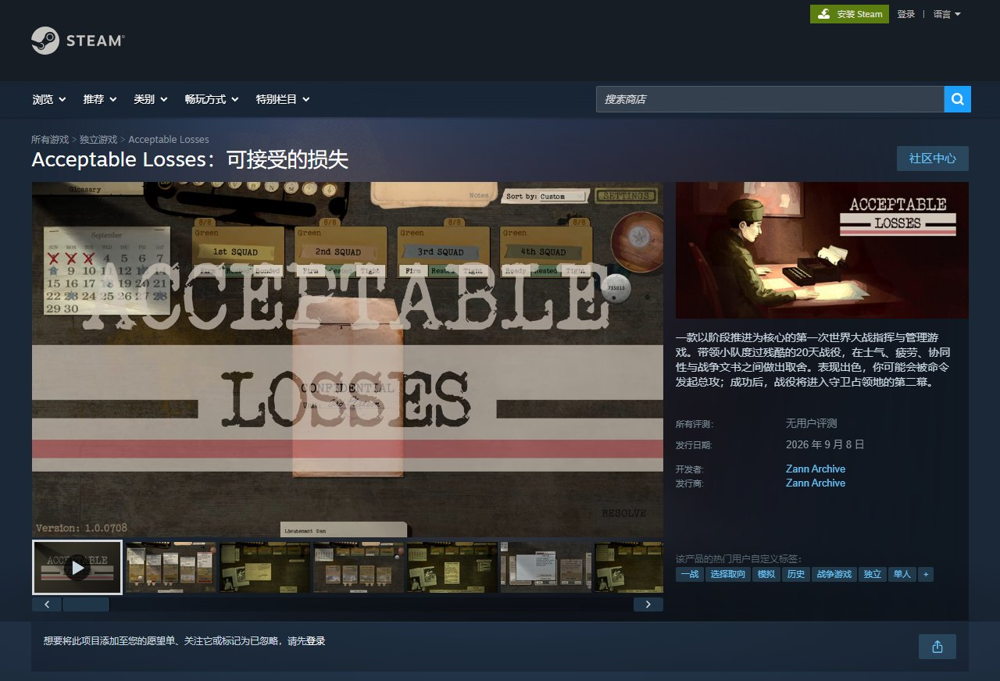

Steam store page preview · Acceptable Losses
This is Acceptable Losses's real Steam page with your short description in native Simplified Chinese and Japanese. Steam's own interface is already localized; the only thing missing was your text. Drag the handle to compare with your current page.
This is a store-page test, the way Steamworks recommends measuring regional wishlists. Your language table stays exactly as it is, and the page carries a clear "game currently available in English" note, so no player is misled.


Acceptable Losses is a phase based WWI command and management game. Lead squads through a brutal 20 day campaign, balancing morale, fatigue, cohesion, and the paperwork of war. Perform well enough and you may be ordered Over the Top, where success leads to a second act holding captured ground.
一款以阶段推进为核心的第一次世界大战指挥与管理游戏。带领小队度过残酷的20天战役，在士气、疲劳、协同性与战争文书之间做出取舍。表现出色，你可能会被命令发起总攻；成功后，战役将进入守卫占领地的第二幕。
第一次世界大戦を舞台にした、局面制の指揮・管理シミュレーション。過酷な20日間の戦役で分隊を率い、士気、疲労、結束、そして戦争につきものの書類仕事を調整せよ。十分な戦果を上げれば総攻撃を命じられ、成功すれば占領地を守る第二幕へ進む。
Send your strings file (CSV, JSON, spreadsheet, .po, anything). You get it back with the new columns filled in, keys and placeholders untouched, plus a glossary so updates stay consistent.
Reply to the email with your word count (or just the file) and you get the exact price and a payment link. If it isn't better than what you have, don't pay.
Only want this store page? $49 for Chinese + Japanese, $99 for five languages.
Send my strings for a free 200-line test Store page only · $49Card or PayPal, no account needed. Your Steam language table only changes when you decide to ship the translation.
Preview built from your public Steam page, for your eyes only. Not affiliated with Valve. Store art belongs to Zann Archive.